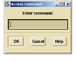
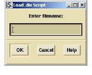
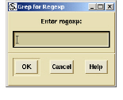

Action
The Action menu allows you to execute a number of Access operations, including commands, scripts, grouping, printing, and grep.
Action menu options include:
• Access command displays a dialog box where you can enter an Access command. The results of your command execution are shown in the minibuffer of the Browser window or in the Results pane.

• Load .dis script displays a dialog box where you can type the name of a stored Access script. For example, you can type the name of an available script that runs a custom query. You must specify the full path to the script; these are most often in the $PSETHOME/lib/ directory.

• Print to file displays a dialog box where you can specify the name of the text file that you want to save the list of selected elements/entities to. This command saves all currently displayed fields.
• Capture group provides another method for quickly storing selected entities to a group. First select entities in the Browser, then select Access > Actions > Capture group. A New Group window appears for you to type the name of the new group you want to create.
• Grep for references allows you to look for the selected entity name in your source code. It shows the same results as a Show > Instances Browser query.
• Grep for regexp displays a dialog box where you can type a regular expression to search for in your source code.

• Retrieve group n provides a quick way to display the members of the last stored group. Group members appear in the Results column of the Browser.